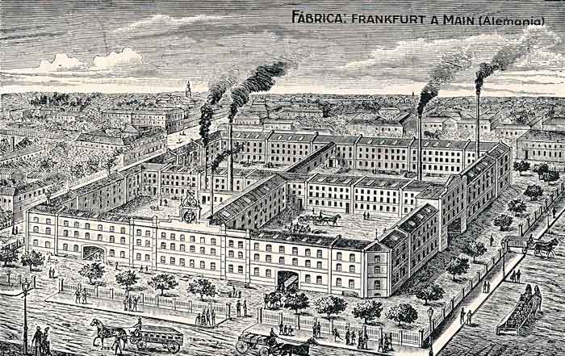
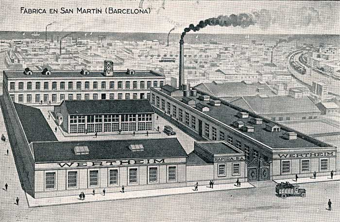
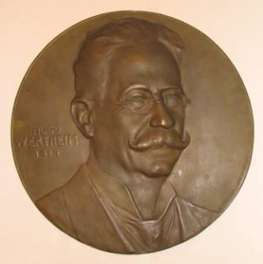
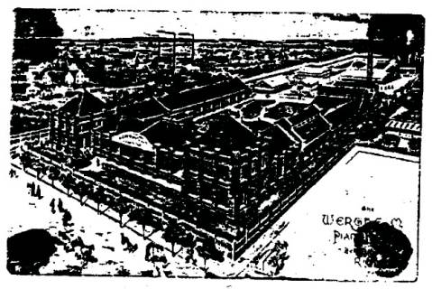
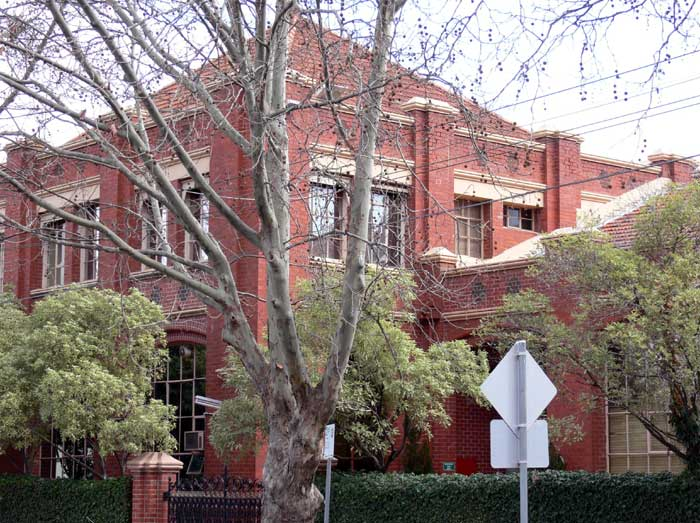
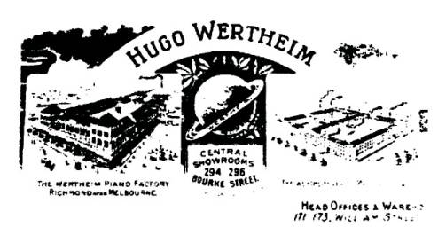

THE NEEDLEBAR
Hugo Wertheim Importer and Piano Manufacturer
By Les Godfrey
Acknowledgements: Compiled from the following resources, Wertheim Hugo (1854-1919) Author: Andrew J. Ray, Australian Directory of Biography. National Archives Australia. Wertheim Pianos. The Merchant of Welby Antiques (Bronze plaque). Members Tripod and The NeedleBar.
A Brief History of the Wertheim Sewing Machine Company
The Wertheim Sewing Machine Company was founded in 1868 by Joseph Wertheim (1804–1899) in Frankfurt, Germany. At this time Joseph was the Frankfurt city delegate for the Democratic Party of which he was a long serving member. At its height the Wertheim factory employed approximately 650 workers. The company used a trademark of a dwarf holding a hammer which is known to have been used until at least 1925, however in 1909 a Star of David was also registered.

The Wertheim Factory in Frankfurt, Germany
In 1870 a subsidiary was formed in Barcelona, Spain under the Wertheim name. Complete machines were imported and sold. Amongst these was the English Jones machine, locals began calling the sewing machines “las rapidas”, and the business became known as “las casa de las rapidas”.

The Wertheim Factory in San Martin, Barcelona, Spain
In 1915 production of a totally manufactured Spanish Wertheim machine was commenced. Wertheim Germany continued manufacturing machines until 1932 when the Wertheim family fled and moved to Spain. Despite converting to Christianity from Judaism, they feared the political unrest in Germany during that time. Wertheim Spain which became Rapida SA was now the sole manufacturer of the Wertheim machine. The factory was managed by Karl Wertheim under the alias Carlos Vallin.
Wertheim serial numbers for Superba start with S6. Wertheim's reincarnation of Singer models began with an S serial number. Until his sixth attempt Wertheim models were not particularly successful in the public's eyes. Machines bearing S6 are likely to have begun being been produced sometime between 1880 and 1890, S6 machines were manufactured until approximately 1915.
Hugo Wertheim (1854-1919)
Hugo Wertheim was born on 12th July 1854 at Lispenhausen, in the German electorate of Hesse-Kessel, son of Meyer Wertheim and his wife Minna, née Heinemann. Meyer was the cousin of Joseph Wertheim.

Hugo Wertheim 1914, Bronze Plaque by K. Korschmann, Frankfurt
It is unknown whether Meyer was involved in the sewing machine industry. Hugo was trained in business and developed a good commercial sense. There is some confusion in the articles read as to whether Hugo was sent overseas by Joseph, or whether he had made it clear he had no intention of staying in Frankfurt. However it is known that Hugo went overseas to act as an agent for the Wertheim Sewing Machine Company, leaving for Australia aboard the Great Britain, arriving in Melbourne in October 1875. He began advertising from premises at 39 Flinders Lane East as an agent for Wertheim Sewing Machines, quickly establishing himself as a merchant. On the 27th February 1882 Hugo was naturalized becoming an Australian citizen.
Returning to Germany he married Joseph Wertheim’s daughter Sophie Emile (1864-1953) on the 30th August 1885 at Frankfurt and the couple came to Melbourne to live. They returned to Europe frequently over the years. Hugo built a substantial business selling sewing machines, knitting machines, bicycles, pianos, mangles, cream separators, washing machines and baby carriages under brands such as Wertheim, Electra, Planet, Griffin and Hapsburg. He actively promoted his business and was known for elaborate displays at agriculture shows and in 1901 at the Pan American Exposition, Buffalo, United States of America.
During the 1880’s he built a 17 bedroom mansion, Gotha (later Hadleigh Hall, demolished 1935), at South Yarra, where musicians such as the visiting Paderewski played.
Wertheim’s Queensland business set up a showroom in Queen Street Brisbane near Custom House. They sold and serviced pianos and sewing machines there until the late 1920’s. In 1903 he opened new retail premises at 294-296 Burke Street and 175 Chapel Street Prahran, with head offices at 171-173 William Street and in South Australia at 107 Rundle Street Adelaide. About this time Jeff Kennett’s (former Victorian Premier 1992-1999) great grandfather pointed out that it was pianos, not sewing machines that were in short supply in the new world. With no expertise in piano manufacture he sent his eldest son Herbert to learn the trade in America. Hugo prepared for his son’s return by ploughing £75,000 into a piano factory on four acres of land at 22 Bendigo Street Richmond. Hugo’s investment was of such significance that Prime Minister Alfred Deakin laid the factory’s foundation stone on the 21st October 1908. Alfred Deakin observed that ‘few men with such opportunities for a life of ease would have embarked on such an enterprise… the first in Victoria to commence making pianos’. Theodore Fink (politician, newspaper proprietor and educationist) remarked that Wertheim had left behind the controversial position of an importer and grown into the patriotic position of a manufacturer. Premier Sir Thomas Bent, to reported cheers, said that he found him as good a Briton as any in promoting industry. Hugo Wertheim was an unassuming man but did nothing by halves, commissioning architect Mr Nahum Barnet, who had worked for Steinway, Bechstein, Kaps and others, to design a prestigious factory that compared with the best in the world. The result was an imposing 50,000 square red brick factory, producing 2,000 pianos, including twelve grands per year. The factory employed 300 people and manufactured all parts of the many types of pianos on offer, predominately from Australian materials. The Wertheim piano enjoyed such acclaim that Dame Nellie Melba is said to have refused to perform with anything else.

Wertheim Piano Factory Picture Source and Date Unknown

Wertheim Piano Factory 2007
Hugo died of chronic hepatitis on the 11th July 1919 at his home at South Yarra and left an estate in Victoria valued for probate at £51,539. Survived by his wife, two daughters and three sons, Herbert Joseph (1892-1972), the eldest, continued to develop the company.
As a lasting tribute Wertheim Street in Richmond, which ran beside the factory, was named after him.
Melbourne’s love affair with the Wertheim Player Piano, a Pianola, ended with the wireless (radio), and the factory closed in 1935, becoming a Heinz food processing plant and in 1955 was taken over by GTV Channel 9 studios and offices.

The Wertheim Logo was known as The Planet, which gave name to the sewing machine and piano models. Picture Source Unknown
The following applications applied for by Hugo Wertheim
Specifications for registration of patent by Hugo Wertheim titled – A new and improved table for sewing machines 1886.
Application for Trade Mark titled Hapsburg – in respect pianos and other musical instruments 1886 -1901.
Specifications for registration of patent by Hugo Wertheim titled – Improvements relating to sewing machines for the purpose of reducing the noise of their working 1887.
Specifications for registration of patent by Hugo Wertheim titled Electra - in respect of bicycles 1895.
Application for Trade Mark titled Electra – The Griffin in respect of bicycles by Hugo Wertheim 1895.
Application for Trade Marks titled Wertheim – in respect of mangles and washing machines by Hugo Wertheim 1889.
Application for Trade Mark titled Griffin – in respect of sewing machines by Hugo Wertheim 1900.
Application for Trade Mark titled Planet - in respect of musical instruments by Hugo Wertheim 1901.
Application for Trade Mark titled Hugo Wertheim Planet – in respect of musical instruments by Hugo Wertheim 1901
Application for Trade Mark titled Planet – in respect of sewing machines by Hugo Wertheim 1901.
Application for Trade Mark titled Federal – in respect of sewing machines 1903.
Les Godfrey 2007